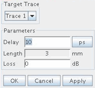

Port Extension
Port extension is used to compensate for errors (phase shift and loss) caused by the transmission line or fixture between the calibration plane and the port of the device.
Once a Smith Chart is in focus, you can access the Port Extension dialog box via the Tools menu. In the dialog box you can select the target trace to which port extension is applied. The following picture shows the Port Extension GUI.

Using the Port Extension User Interface, you can adjust the following Parameters
- Delay
Every trace in a Smith Chart is associated with an electrical delay value. This field shows the electrical delay associated with the target trace. By default the electrical delay is 0 ps. After changing the value and applying the change, the frequency depending reflection coefficients of the target trace are re-calculated (phase-rotated) and their positions are updated in the Smith Chart. This new value is kept with the target trace. When saving the trace to a CITI format file or Touchstone format file, the new reflection coefficient data will be saved but the electrical delay value is not.
- Length
This field displays the physical length corresponding to the electrical delay. Velocity factor of 1 is assumed. This field is not editable.
- Loss
Every trace in a Smith Chart is associated with a loss value. This field shows the loss value associated with the target trace. For simplicity the loss is assumed to be constant within the frequency band of interest. By default the loss is 0 dB. After changing the value and applying the change, the reflection coefficients of the target trace are re-calculated (magnitude is increased or decreased) and their positions are updated in the Smith Chart. This new value is kept with the target trace. When saving the trace to a CITI format file or Touchstone format file, the new reflection coefficient data will be saved but the loss value is not.
Functional changes
- Introduced in SmarTest 7.0.3